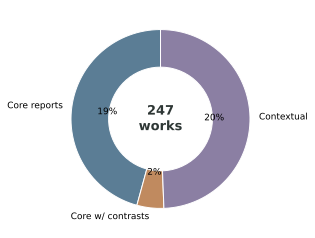
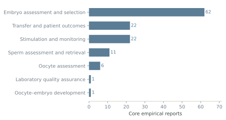
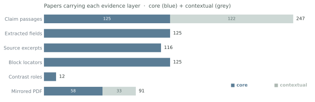
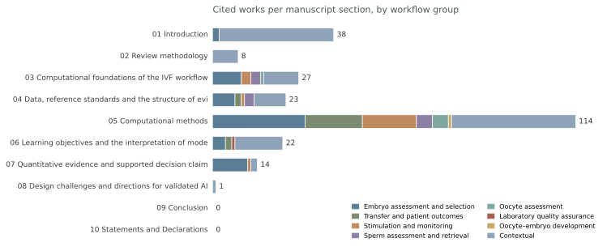
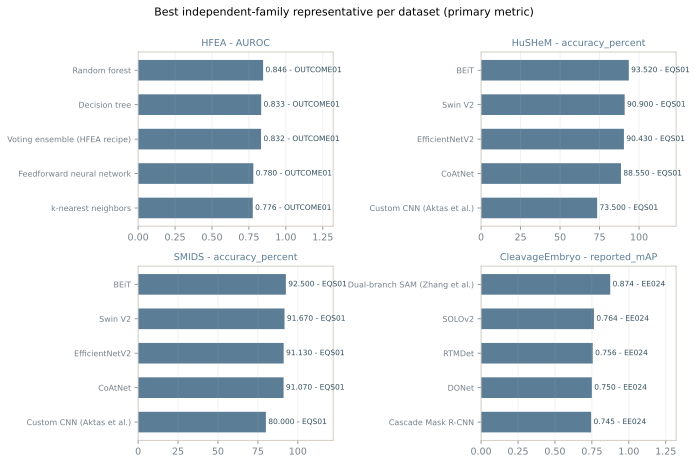
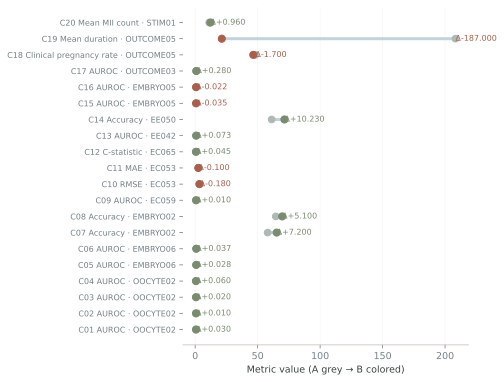

About this resource
This Evidence Companion is a supplementary, reviewer-facing appendix to the manuscript Artificial intelligence for in vitro fertilization (submitted to Artificial Intelligence Review). Rather than asking a reviewer to take each of the 247 citations on trust, it makes the evidentiary chain inspectable at the level of individual sentences: every cited work is filed under the manuscript section that first invokes it, the verbatim claim passage it supports is highlighted, the evidence fields are machine-extracted, and each excerpt is keyed to a sha256-pinned locator in the archived full text. Where a PDF may be redistributed (local copy or open access), the passages supporting the claim are highlighted in situ.
Coverage. 247 cited works — 125 core empirical reports, 122 contextual sources — across 10 manuscript sections and 7 workflow groups; 20 conditional within-report comparisons; 91 mirrored PDFs (58 with in-situ highlight marks).
Status. All machine-derived content is flagged human verification
pending; the author confirms each card before submission. Cite the manuscript itself when
referencing this resource. Built with build_site.py; pipeline documented on the
Methods page.
Corpus at a glance


Papers by manuscript section
- §1 Introduction 38
- §2 Review methodology 8
- §3 Computational foundations of the IVF workflow 27
- §4 Data, reference standards and the structure of evidence 23
- §5 Computational methods 114
- §6 Learning objectives and the interpretation of model outputs 22
- §7 Quantitative evidence and supported decision claims 14
- §8 Design challenges and directions for validated AI 1
Benchmarks — datasets, metrics & leading configurations
Top-cited datasets (verified use counts), the evaluation metrics reported across the corpus, and the leading model configurations within each of the five largest evaluation panels. Ranks are within a single report and protocol, not a global leaderboard.
Most-used datasets
| Resource · first-cited work | Open access | Reports | References |
|---|---|---|---|
| HFEA registry Machine learning predicts live-birth occurrenc… | On request | 4 | OUTCOME01; EC063; ER037; ER039 |
| PCRM/SFU HMC MiMics-Net: A Multimodal Interaction Network f… | On request | 3 | EE006; EE019; EQF01 |
| HuSHeM A Dual Architecture Fusion and AutoEncoder for… | Open | 3 | EC080; EC082; EQS01 |
| Nantes/Gomez 704 Accurate machine learning model for human embr… | Open | 3 | EE015; EE017; EQF01 |
| VISEM Robust Real-Time Sperm Tracking with Identity … | Open | 3 | EC077; EC081; ER046 |
| Kromp blastocysts An annotated human blastocyst dataset to bench… | Open | 2 | EE046; EQF01 |
| Monash live sperm Morphology Classification of Live Unstained Hu… | Open | 2 | SPERM06; EC079 |
| Oocytor (human) An interpretable and versatile machine learnin… | Open | 2 | ER044; OOCYTE02 |
| SMIDS A Dual Architecture Fusion and AutoEncoder for… | Open | 2 | EC080; EQS01 |
| CleavageEmbryo Cleavage-stage embryo segmentation using SAM-b… | On request | 1 | EE024 |
Common evaluation metrics
| Metric | Reports |
|---|---|
| AUROC | 4 |
| Precision | 4 |
| Recall | 4 |
| Accuracy | 3 |
| F1 | 3 |
| Accuracy % | 3 |
| Dice | 2 |
| Mean Jaccard | 2 |
| Mean Dice | 2 |
| mAP@0.5 | 2 |
| Precision* | 1 |
| Recall* | 1 |
Leading configurations — top-5 datasets
Hi-LabSpermMorpho — 18-class sperm morphology classification 44 models · Accuracy %
| # | Model configuration | Accuracy % | Report | |
|---|---|---|---|---|
| 1 | Soft voting: EfficientNetV2-S + V2-M + V2-L | 67.7 | EfficientNetV2 | EC078 — Advanced Multi-Level Ensemble Learning Approac… |
| 2 | V2-S + V2-M + V2-L originalfeatures / SVM+MLP-A+RF | 67.36 | — | EC078 — Advanced Multi-Level Ensemble Learning Approac… |
| 3 | V2-S + V2-M + V2-L originalfeatures / SVM+RF | 67.22 | — | EC078 — Advanced Multi-Level Ensemble Learning Approac… |
| 4 | V2-S + V2-M + V2-L originalfeatures / MLP-A+RF | 67.0 | — | EC078 — Advanced Multi-Level Ensemble Learning Approac… |
| 5 | Soft voting: EfficientNetV2-S + EfficientNetV2-M | 66.86 | EfficientNetV2 | EC078 — Advanced Multi-Level Ensemble Learning Approac… |
| 6 | EfficientNetV2-S + V2-M + V2-L originalfeatures / RF | 66.64 | EfficientNetV2 | EC078 — Advanced Multi-Level Ensemble Learning Approac… |
| 7 | Soft voting: EfficientNetV2-M + EfficientNetV2-L | 66.59 | EfficientNetV2 | EC078 — Advanced Multi-Level Ensemble Learning Approac… |
| 8 | Soft voting: EfficientNetV2-S + EfficientNetV2-L | 66.42 | EfficientNetV2 | EC078 — Advanced Multi-Level Ensemble Learning Approac… |
| 9 | V2-S + V2-M + V2-L originalfeatures / SVM+MLP-A | 66.31 | — | EC078 — Advanced Multi-Level Ensemble Learning Approac… |
| 10 | EfficientNetV2-S + V2-M + V2-L reducedfeatures / MLP-A | 66.16 | EfficientNetV2 | EC078 — Advanced Multi-Level Ensemble Learning Approac… |
18456RGBimages;5-fold cross-validation; same study feature/fusionexperiments · rank within report & protocol (within this report and protocol only; not latest globalSOTA).
HFEA registry — binary live-birth occurrence 8 models · Accuracy
| # | Model configuration | Accuracy | Report | |
|---|---|---|---|---|
| — | PSO + TabTransformer | 0.97 | TabTransformer | EC063 — An integrated optimization and deep learning p… |
| — | PSO + Transformer | 0.963 | — | EC063 — An integrated optimization and deep learning p… |
| — | PCA + TabTransformer | 0.941 | TabTransformer | EC063 — An integrated optimization and deep learning p… |
| — | PCA + Transformer | 0.925 | — | EC063 — An integrated optimization and deep learning p… |
| — | PSO + RF | 0.905 | — | EC063 — An integrated optimization and deep learning p… |
| — | PCA + RF | 0.902 | — | EC063 — An integrated optimization and deep learning p… |
| — | PCA + decision tree | 0.898 | — | EC063 — An integrated optimization and deep learning p… |
| — | PSO + decision tree | 0.889 | — | EC063 — An integrated optimization and deep learning p… |
70/15/15splitreported;Section2.7saysallmetricsare10-foldaverages;mappingunresolved · rank within report & protocol ().
CleavageEmbryo — blastomere instance segmentation 11 models · mAP
| # | Model configuration | mAP | Report | |
|---|---|---|---|---|
| 1 | SAM dual branch + YOLOv8 | 0.874 | SAM | EE024 — Cleavage-stage embryo segmentation using SAM-b… |
| 2 | SOLOv2 | 0.764 | SOLOv2 | EE024 — Cleavage-stage embryo segmentation using SAM-b… |
| 3 | RTMDet | 0.756 | MMDet | EE024 — Cleavage-stage embryo segmentation using SAM-b… |
| 4 | DONet | 0.75 | — | EE024 — Cleavage-stage embryo segmentation using SAM-b… |
| 5 | Cascade MaskRCNN | 0.745 | MMDet | EE024 — Cleavage-stage embryo segmentation using SAM-b… |
| 6 | GAInS | 0.723 | — | EE024 — Cleavage-stage embryo segmentation using SAM-b… |
| 7 | Mask2Former | 0.708 | Mask2Former | EE024 — Cleavage-stage embryo segmentation using SAM-b… |
| 8 | Mask Scoring RCNN | 0.672 | MMDet | EE024 — Cleavage-stage embryo segmentation using SAM-b… |
| 9 | YOLACT | 0.643 | YOLACT | EE024 — Cleavage-stage embryo segmentation using SAM-b… |
| 10 | SAM auto | 0.002 | SAM | EE024 — Cleavage-stage embryo segmentation using SAM-b… |
1232train/316validationimages;automatedboxprompts exceptoracle · rank within report & protocol ().
HuSHeM — four-class morphology 11 models · Accuracy %
| # | Model configuration | Accuracy % | Report | |
|---|---|---|---|---|
| 1 | BEiT-B | 93.52 | BEiT | EQS01 — Unveiling the capabilities of vision transform… |
| 2 | Swin-V2-L | 90.9 | Swin-V2 | EQS01 — Unveiling the capabilities of vision transform… |
| 3 | Swin-V2-T | 90.83 | Swin-V2 | EQS01 — Unveiling the capabilities of vision transform… |
| 4 | Eff-V2-S | 90.43 | EfficientNetV2 | EQS01 — Unveiling the capabilities of vision transform… |
| 5 | Eff-V2-L | 89.99 | EfficientNetV2 | EQS01 — Unveiling the capabilities of vision transform… |
| 6 | Custom CNN + BEiT-B | 89.97 | BEiT | EQS01 — Unveiling the capabilities of vision transform… |
| 7 | Eff-V2-S + BEiT-B | 89.56 | EfficientNetV2 | EQS01 — Unveiling the capabilities of vision transform… |
| 8 | Eff-V2-S + Swin-V2-L | 88.59 | EfficientNetV2 | EQS01 — Unveiling the capabilities of vision transform… |
| 9 | CoAtNet-1 | 88.55 | paper | EQS01 — Unveiling the capabilities of vision transform… |
| 10 | CoAtNet-0 | 86.79 | paper | EQS01 — Unveiling the capabilities of vision transform… |
Shared fivefold cross-validation; the same CV informed hyperparameter and augmentation selection. Augmentation is restricted to training; original images are used for validation. No independent test set. · rank within report & protocol (within this report and protocol only; not latest globalSOTA).
SMIDS — three-class morphology/non-sperm 11 models · Accuracy %
| # | Model configuration | Accuracy % | Report | |
|---|---|---|---|---|
| 1 | BEiT-B | 92.5 | BEiT | EQS01 — Unveiling the capabilities of vision transform… |
| 2 | Swin-V2-L | 91.67 | Swin-V2 | EQS01 — Unveiling the capabilities of vision transform… |
| 3 | Custom CNN + BEiT-B | 91.57 | BEiT | EQS01 — Unveiling the capabilities of vision transform… |
| 4 | Eff-V2-S + Swin-V2-L | 91.17 | EfficientNetV2 | EQS01 — Unveiling the capabilities of vision transform… |
| 5 | Eff-V2-S | 91.13 | EfficientNetV2 | EQS01 — Unveiling the capabilities of vision transform… |
| 5 | Swin-V2-T | 91.13 | Swin-V2 | EQS01 — Unveiling the capabilities of vision transform… |
| 7 | CoAtNet-1 | 91.07 | paper | EQS01 — Unveiling the capabilities of vision transform… |
| 7 | Eff-V2-L | 91.07 | EfficientNetV2 | EQS01 — Unveiling the capabilities of vision transform… |
| 9 | CoAtNet-0 | 90.73 | paper | EQS01 — Unveiling the capabilities of vision transform… |
| 10 | Eff-V2-S + BEiT-B | 90.67 | EfficientNetV2 | EQS01 — Unveiling the capabilities of vision transform… |
Shared fivefold cross-validation; the same CV informed hyperparameter and augmentation selection. Augmentation is restricted to training; original images are used for validation. No independent test set. · rank within report & protocol (within this report and protocol only; not latest globalSOTA).
How to read this site
| Visual cue | Meaning |
|---|---|
| yellow highlight | Verbatim manuscript passage citing the work — the claim it supports |
| orange highlight | Machine-extracted evidence field (task, inputs, method, split, validation…) |
| EMBRYO01-B0034 | Block locator into the archived full-text reader (sha256-pinned) |
| core / contextual | Evidence layer of the cited work |
| C-id | Paper contributes a conditional comparison (Contrasts page) |
| pending | Machine-derived; human verification pending |
Reading path: 1. Catalog filter → 2. paper card → 3. Claims → 4. Contrasts/Atlas.
Evidence highlights



